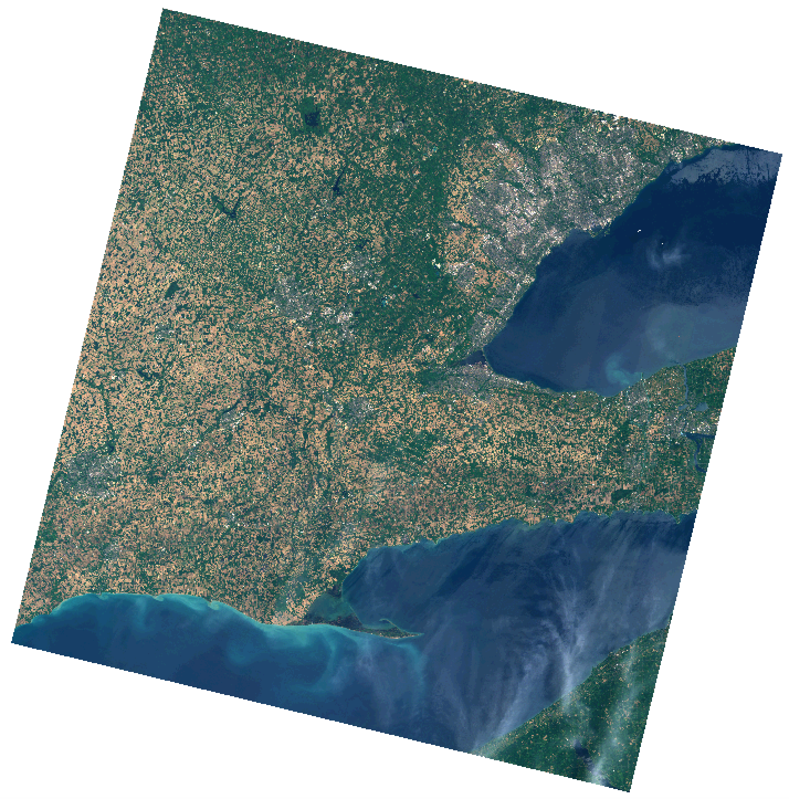

GEOG*3420 Remote Sensing of the Environment (W25)
Lab Assignment 4
(42.5 Marks Total)
Introduction
This lab exercise introduces students to supervised image classification. Students will also learn about training data sets used in image classification and approaches to generalizing classification maps.
Readings and Resources
The following materials, combined with your textbook, can be used as background materials and to help in answering the assignment questions.
Before you begin
You will need to download the data associated with this lab assignment from the GEOG*3420 CourseLink site. These data, as usual, are quite large and you will need to consider data storage solutions (e.g. a dedicated USB memory stick for the course).
Important
Up until this point in the semester, you have been using functions within Whitebox Workflows (WbW) that are within its free tier. In this lab we will be using some functions that are within the Whitebox Workflows Professional tier product. To use these functions, you will need to specify a floating-license ID, a three-word phrase, that your TA will provide you at the start of the lab. We will need to structure our scripts somewhat differently to use this license. For example:
from whitebox_workflows import available_functions, WbEnvironment
# Checks for a valid floating license stored on remote server
license_id = 'your-license-id' # Update this string to the three-word floating-license ID provided by your TA
wbe = WbEnvironment(license_id)
try:
available_functions(wbe)
# Do some processing here including calling some WbW-Pro tool functions...
except Exception as e:
print("The error raised is: ", e)
finally:
wbe.check_in_license(license_id)
You will notice the line wbe = WbEnvironment(license_id) in the above script is different than our usual wbe = WbEnvironment(). We've specified an argument, the variable containing our floating-license ID, in the creation of the WbEnvironment object. This is what unlocks the functions contained within the Pro level of WbW. Before trying to run this script replace the your-license-id in the script above with the specific license ID string that your TA provided you in lab. The other major change that you'll notice is that there is a finally block that calls the wbe.check_in_license function, also specifying our license ID value. This is very important, because it returns our floating license to the license server when we are done running our script so that it is available the next time we (or our classmate) wants to use it. If we didn't check the license back in, it wouldn't be available in the future and we may get an error when we try to run a Pro-level function stating that no license was available.
A note on checking-in your license: Because the floating license uses a check-out/check-in model, you must remember to check-in your license after you have completed processing your script. The last thing you do in each script, therefore, should be to call the WbEnvironment.check_in_license method. Failure to do so will mean that you or one of your classmates may not be able to run scripts in the future. For more details, please see the user manual.
What you need to hand in
You will hand in a printed report summarizing the answer to each of the questions in the following exercise along with the necessary colour images.
Part 1: Evaluating Training Site Data
Multi-spectral image classification involves two distinct activities. The first activity is the recognition of categories of real-world features in the landscape, e.g. 'deciduous forests'. The second activity in all multi-spectral classifications involves labeling pixels within an image data set. With supervised classification methods, the user first identifies real-world land-covers, examines the images to find training areas to typify the 'spectral signatures' of these features and then uses the signatures to label all of the remaining pixels in the scene. Unsupervised classification techniques rely on statistical clustering methods (e.g. k-Means clustering) to find groups, or clusters, of similar pixels with respect to their spectral properties. After this initial clustering phase, the user then has the task of relating the statistically defined spectral classes to real-world land-covers. Both approaches to image classification require a substantial amount of human effort and judgement to identify land-covers within the image scene. The difference is that with supervised classification techniques this human component occurs early on in the process, while unsupervised classification methods require effort after the automated classification step in determining the physical meaning of each statistically defined cluster. Generally, supervised classification techniques are preferred because the image analyst has greater control over the classification (e.g., I may know that I want to classify water, urban, forest, agriculture), whereas, the analyst has very little control over the clusters that are created by unsupervised methods. Unsupervised classification techniques are useful as an initial exploratory tool and when the analyst is unfamiliar with data or the landscape being analyzed. In this lab, we'll be performing different types of supervised classifications.
Using QGIS (or ArcGIS if that is your preference), display the natural_colour.tif image, contained in the decompressed Lab 4 data folder, which you should have downloaded from the CourseLink site. You should find the the image looks something like the following:

This is the same cloud-free Landsat 9 Level-2 (reflectance) scene of Southern Ontario that we've used in previous lab exercises. In addition to this colour composite image, the Lab 4 data folder should also contain bands 1 - 7 (LC09_L1TP_018030_20220614_20220615_02_T1_B1.tif, LC09_L1TP_018030_20220614_20220615_02_T1_B2.tif, LC09_L1TP_018030_20220614_20220615_02_T1_B3.tif...).
Display the vector training_data.shp, changing the symbology using a 'Categorized' scheme specifying the CLASS attribute as the Value. This vector file contains polygons that represent exemplars of various land-cover types that are common in the scene.
| Land cover |
|---|
| Forest |
| Industrial/Commercial |
| Other Crops |
| Residential |
| Soil |
| Water |
| Wheat |
1.1. What are some considerations that should be made when selecting good training sites for image classification? (3 marks)
1.2. How many of training sites are there of each of the land-cover types? You may want to open the attribute table to count each total. (0.5 marks per value for 3.5 marks total)
In reality, we are generally more interested in mapping land-use (what people do on the land-surface) rather than land-cover (the type of material present on the landscape). Multi-spectral image classification can tell us about land-cover based on the reflectance characteristics of the land-surface. For example, we have training classes for Wheat and Other Crops, which are both land-covers associated with an Agricultural land-use. Land-uses may be very heterogeneous in their land-cover and spectral characteristics. Ideally, land-cover classes, however, are more uniform in their spectral characteristics and are separable from other land-cover classes in some regions of the spectrum. To evaluate whether or not this is the case for our land-cover classes and training data, we will use the Whitebox Workflows evaluate_training_sites function. Run the following script and take a look at the output file (training_site_eval.html), which should be automatically displayed in your browser after the script has completed.
evaluate_training_sites.py
import os
import whitebox_workflows
license_id = 'your-license-id' # Update this string to the floating-license ID provided by your TA
wbe = whitebox_workflows.WbEnvironment(license_id)
try:
# declare your working directory as a variable
wbe.working_directory = "/path/to/lab/data" # BE SURE TO UPDATE THIS
assert(os.path.isdir(wbe.working_directory))
wbe.verbose = True # Let's print the output of each tool
# Read the 7 bands of data into a variable named 'band_data'
print('Reading band data...')
band_data = wbe.read_rasters(
'LC09_L1TP_018030_20220614_20220615_02_T1_B1.tif',
'LC09_L1TP_018030_20220614_20220615_02_T1_B2.tif',
'LC09_L1TP_018030_20220614_20220615_02_T1_B3.tif',
'LC09_L1TP_018030_20220614_20220615_02_T1_B4.tif',
'LC09_L1TP_018030_20220614_20220615_02_T1_B5.tif',
'LC09_L1TP_018030_20220614_20220615_02_T1_B6.tif',
'LC09_L1TP_018030_20220614_20220615_02_T1_B7.tif',
)
# Read in the training data
print('Reading training data...')
training_data = wbe.read_vector('training_data.shp')
wbe.evaluate_training_sites(
input_rasters = band_data,
training_polygons = training_data,
class_field_name = 'CLASS',
output_html_file = 'training_site_eval.html'
)
print("Operation complete!") # Provide some sort of indication that the job is done.
except Exception as e:
print(f"Exception: {e}")
finally:
print(wbe.check_in_license(license_id)) # Check your license back in.
training_site_eval.html contains several box and whisker plots, one for each of the seven bands of imagery. Each plot shows the distribution range of reflectance values for each of the land-cover classes in the training data. The inter-quartile range defines the 'box', the vertical line within the box is the median reflectance, and the whiskers mark the minimum and maximum values in the distributions.
1.3. How similar are the distributions of reflectances for the two urban land-cover types, Industrial/Commercial and Residential? (2 marks)
1.4. Are there classes that you expect to be more difficult to accurately distinguish because of their overlap among all bands? Are there certain classes that you expect will have no issue being accurately classified owing to their wide separability in reflectance characteristics compared with the other classes? (3 marks)
1.5. Are there any classes where the range of reflectance values is comparably wider than other classes? What does this indicate about this land-cover class? Do you think that this characteristic could be problematic for classification and if so, what could be done to address the situation? (4 marks)
Part 2: Multi-spectral Image Classification
It is strongly recommended that you complete the following reading before continuing, with particular focus on the sections addressing supervised classification and more advanced approaches to image classification (i.e., decision trees).
Readings: Mather and Koch (2011), Chapter 8 Classification, Computer Processing of Remotely-Sensed Imagery.
Many supervised and unsupervised image classification methods exist. Unfortunately, no one method to image classification is universally better than other methods (although some will often perform well under many conditions) and an image classification exercise often involves experimenting with different techniques to determine optimal methods for a particular image data set and classification scheme.
Let's begin our image classification experimentation by running the minimum distance classification method on our Landsat 9 data set. Create a file called classification.py and copy the following script into it and then run the script (after modifying it as required).
classification.py
import os
import whitebox_workflows
license_id = 'your-license-id' # Update this string to the floating-license ID provided by your TA
wbe = whitebox_workflows.WbEnvironment(license_id)
try:
# declare your working directory as a variable
wbe.working_directory = "/path/to/lab/data" # BE SURE TO UPDATE THIS
assert(os.path.isdir(wbe.working_directory))
wbe.verbose = True # Let's print the output of each tool
# Read the 7 bands of data into a variable named 'band_data'
print('Reading band data...')
band_data = wbe.read_rasters(
'LC09_L1TP_018030_20220614_20220615_02_T1_B1.tif',
'LC09_L1TP_018030_20220614_20220615_02_T1_B2.tif',
'LC09_L1TP_018030_20220614_20220615_02_T1_B3.tif',
'LC09_L1TP_018030_20220614_20220615_02_T1_B4.tif',
'LC09_L1TP_018030_20220614_20220615_02_T1_B5.tif',
'LC09_L1TP_018030_20220614_20220615_02_T1_B6.tif',
'LC09_L1TP_018030_20220614_20220615_02_T1_B7.tif',
)
# Read in the training data
print('Reading training data...')
training_data = wbe.read_vector('training_data.shp')
# Perform a minimum-distance classification
print('Performing min-dist classification...')
min_dist = wbe.min_dist_classification(
input_rasters = band_data,
training_data = training_data,
class_field_name = 'CLASS',
dist_threshold = 3.0
)
# Save the output raster to disc
wbe.write_raster(min_dist, 'min_dist.tif', compress=True)
print("Operation complete!") # Provide some sort of indication that the job is done.
except Exception as e:
print(f"Exception: {e}")
finally:
print(wbe.check_in_license(license_id)) # Check your license back in.
When the script has completed, display min_dist.tif using QGIS.
2.1. Include a map of the min-dist classification for the Guelph and surroundings area. Use a colour scheme for your class map similar to the following. (1 mark)

Visually evaluate the accuracy of the classification by comparing the class map with the natural colour composite image. You may also wish to overlay an OpenStreetMaps layer for comparison, which is particularly useful for assessing how well water bodies, urban areas, and possibly forest (although there are temporal issue because of urban expansion and de/reforestation).
2.2. How well did the min-dist classification perform for mapping water bodies, urban areas (both residential and industrial/commercial), and forest? (3 marks)
Now modify the classification script above to use the parallelepiped classification method instead (you may just want to comment out the min-dist classification part above, in case you need to run it again):
# Perform a parallelepiped classification
print('Performing parallelipiped classification...')
parallelepiped = wbe.parallelepiped_classification(
input_rasters = band_data,
training_data = training_data,
class_field_name = 'CLASS'
)
# Save the output raster to disc
wbe.write_raster(parallelepiped, 'parallelepiped.tif', compress=True)
2.3. Include a map of the parallelepiped classification for same area around Guelph used above. (Hint if you zoom into your area of interest around Guelph, create a new vector, and digitize two points in opposing corners, you'll be able to zoom to extent and return to the same spatial extent whenever required; 1 mark)
Now modify the classification script to use the k-Nearest Neighbour (kNN) classification method:
# Perform a kNN classification
print('Performing kNN classification...')
knn = wbe.knn_classification(
input_rasters = band_data,
training_data = training_data,
class_field_name = 'CLASS',
scaling_method = "Standardize",
k = 5,
test_proportion = 0.2,
use_clipping = True,
create_output = True
)
# Save the output raster to disc
wbe.write_raster(knn, 'knn.tif', compress=True)
You'll notice that unlike with the min-dist and parallelepiped classifications, kNN outputs a measure of the accuracy of the classification. It does this by developing the classification model with a subset of the training data and setting aside a certain number of the training pixels (20% in our script above, test_proportion = 0.2) for evaluating the accuracy. The training data are randomly assigned to either training or testing groups and therefore the class map that is generated will be different each time (this also means that no two students should have the same class map and you shouldn't be concerned if you map is slightly different than that of the student next to you). The classification accuracy data will be reported at the terminal when you run your script.
2.4. What is the difference between the overall accuracy and the kappa index for classification assessment? (1 mark)
2.5. Describe how the kNN classification method works. What is the impact of increasing the value of
kto 8 or decreasingkto 1 on our classification model? (3 marks)2.6. Include a map of the kNN classification for same area around Guelph used above. (1 mark)
Now run the classification script below to use the random forest classification method. Unlike the other classification methods, this is a two-step process involving first fitting the random forest model and then using that model to predict the output raster.
classification.py
import os
import whitebox_workflows
license_id = 'your-license-id' # Update this string to the floating-license ID provided by your TA
wbe = whitebox_workflows.WbEnvironment(license_id)
try:
# declare your working directory as a variable
wbe.working_directory = "/path/to/lab/data" # BE SURE TO UPDATE THIS
assert(os.path.isdir(wbe.working_directory))
wbe.verbose = True # Let's print the output of each tool
# Read the 7 bands of data into a variable named 'band_data'
print('Reading band data...')
band_data = wbe.read_rasters(
'LC09_L1TP_018030_20220614_20220615_02_T1_B1.tif',
'LC09_L1TP_018030_20220614_20220615_02_T1_B2.tif',
'LC09_L1TP_018030_20220614_20220615_02_T1_B3.tif',
'LC09_L1TP_018030_20220614_20220615_02_T1_B4.tif',
'LC09_L1TP_018030_20220614_20220615_02_T1_B5.tif',
'LC09_L1TP_018030_20220614_20220615_02_T1_B6.tif',
'LC09_L1TP_018030_20220614_20220615_02_T1_B7.tif',
)
# Read in the training data
print('Reading training data...')
training_data = wbe.read_vector('training_data.shp')
# Train the model
model = wbe.random_forest_classification_fit(
band_data,
training_data,
class_field_name = 'CLASS',
split_criterion = "Gini",
n_trees = 100,
min_samples_leaf = 1,
min_samples_split = 2,
test_proportion = 0.2
)
# Use the model to predict
rf_class_image = wbe.random_forest_classification_predict(band_data, model)
# Save the output raster to disc
wbe.write_raster(rf_class_image, 'rf_classification.tif', compress=True)
print("Operation complete!") # Provide some sort of indication that the job is done.
except Exception as e:
print(f"Exception: {e}")
finally:
print(wbe.check_in_license(license_id)) # Check your license back in.
Random forest classification is the slowest-running of the classification methods that we're evaluating but often provides very good results. The processing time is greatly affected by the n_trees parameter (decreasing this will speed up the processing but may decrease the accuracy). Like kNN, random forest classification also outputs classification accuracy statistics.
2.7. Generally, the accuracy/kappa for the training data will be higher than the equivalent accuracy/kappa statistics for the test data. Why do you think this is? Which of the two groups of reported statistics (training or test) do you think is more important and why? (2 mark)
2.8. Include a map of the random forest classification for same area around Guelph used above. (1 mark)
2.9. Consider the reported 'Variable Permutation Importance'. Which band was found to be the most important for the classification and which was the least? Why might it be that a certain band may contribute very little to the classification model? (4 marks)
2.10. After inspecting each of the four classification maps, which of classification method do you feel performed the best for this data set and why? Provide example screenshots to illustrate your answer. (3 marks)
Part 3: Cleaning the Class Map
The class images derived from the classification procedure in Part 2 are likely very 'messy'. That is, they may contain several very small class groupings (objects), which contribute to a noisy appearance. It is common in many image classification exercises, depending on the application (e.g., if the raster map must be vectorized for cartographic display), to simplify class maps by removing smaller groups in a post-processing step. One of the most common approaches to this task is to apply a Majority filter. Create a WbW Python script (simplify.py) that applies the majority_filter function to your random forest class map from the previous section. Your script should run this filter function three times, to apply 3x3, 5x5, and 7x7 majority filters.
3.1. Include a map of the 5x5 majority filtered class map for the Guelph area with your final report. (1 mark)
3.2. Describe the impact of increasing the filter size on the class map? (1 mark)
3.3. To what extent did you find that the majority filter modified the boundaries between class features in the image and how was this affected by increasing the filter size? (2 marks)
Now modify your simplify.py script to use WbW's generalize_classified_raster function.
generalized = wbe.generalize_classified_raster(
raster = random_forest,
area_threshold = 10,
method = "longest"
)
This function re-assigns the features in the class map that are smaller than a threshold size (area_threshold) to the class of the neighbouring feature with either the longest shared boundary (which we use here), or optionally the largest or nearest neighours. As we did for the majority filter, experiment with modifying the area_threshold parameter using values 5, 10, and 20.
3.4. Include a map of the
area_threshold = 10generalized classified map for the Guelph area with your final report. (1 mark)3.5. How would you describe the overall performance of this approach to simplifying a class map compared with a majority filter? For example, describe how the two methods compare in terms of impact on the boundaries between features and the control over the size of features that are removed. Provide screenshots to support your answer. (2 mark)